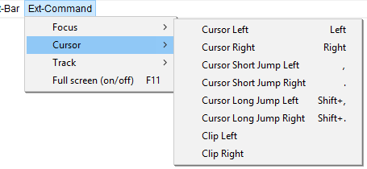

Ext-Command Menu: Cursor
The Ext-Command > Cursor Menu provides commands for moving either the editing cursor, playback cursor or an audio track or clip.
- Click, or hover, on any menu item in the image to read about that command. Skip the image
- 
Cursor Left Left
When not playing audio, moves the editing cursor one screen pixel to left. When a Snap To option is chosen, moves the cursor to the preceding unit of time as determined by the current selection format. If the key is held down, the cursor speed depends on the length of the tracks.
When there is a selection, moves the cursor to the beginning of the selection, removes the selection, and scrolls the track to display the cursor (if needed).
When playing audio, moves the playback cursor as described at "Cursor Short Jump Left" (below).
Cursor Right Right
When not playing audio, moves the editing cursor one screen pixel to right. When a Snap To option is chosen, moves the cursor to the following unit of time as determined by the current selection format. If the key is held down, the cursor speed depends on the length of the tracks.
When there is a selection, moves the cursor to the end of the selection, removes the selection, and scrolls the track to display the cursor (if needed).
When playing audio, moves the playback cursor as described at "Cursor Short Jump Right" (below).
Cursor Short Jump Left ,
When not playing audio, moves the editing cursor one second left by default. When playing audio, moves the playback cursor one second left by default. The default value can be changed by adjusting the "Short Period" under "Seek Time when playing" in Playback Preferences.
Cursor Short Jump Right .
When not playing audio, moves the editing cursor one second right by default. When playing audio, moves the playback cursor one second right by default. The default value can be changed by adjusting the "Short Period" under "Seek Time when playing" in Playback Preferences.
Cursor Long Jump Left Shift+,
When not playing audio, moves the editing cursor 15 seconds left by default. When playing audio, moves the playback cursor 15 seconds left by default. The default value can be changed by adjusting the "Long Period" under "Seek Time when playing" in Playback Preferences.
Cursor Long Jump Right Shift+.
When not playing audio, moves the editing cursor 15 seconds right by default. When playing audio, moves the playback cursor 15 seconds right by default. The default value can be changed by adjusting the "Long Period" under "Seek Time when playing" in Playback Preferences.
Clip Left
Moves the currently focused audio track (or a separate clip in that track which contains the editing cursor or selection region) one screen pixel to left.
Clip Right
Moves the currently focused audio track (or a separate clip in that track which contains the editing cursor or selection region) one screen pixel to right.